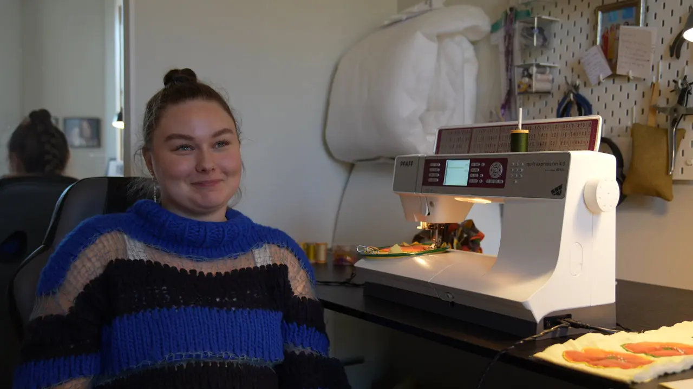
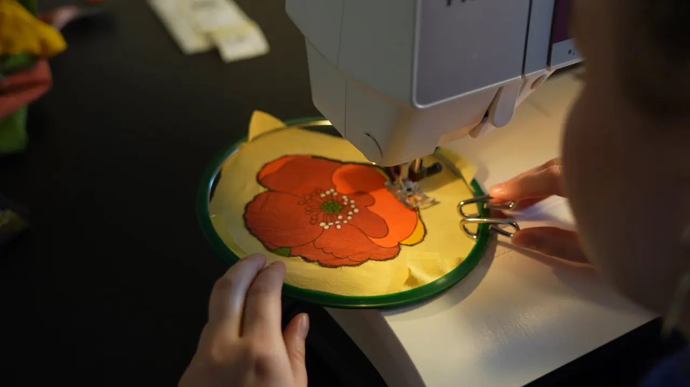
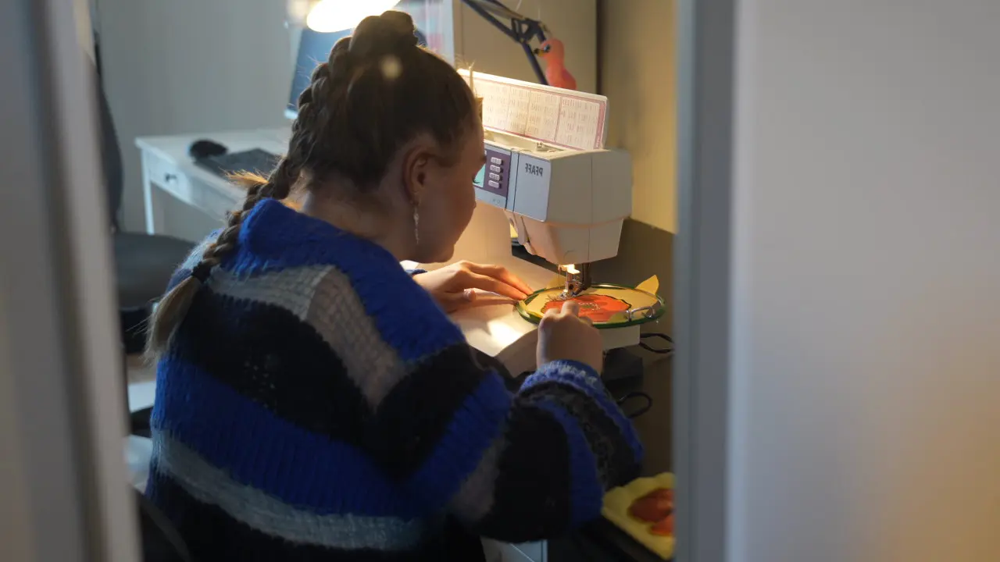
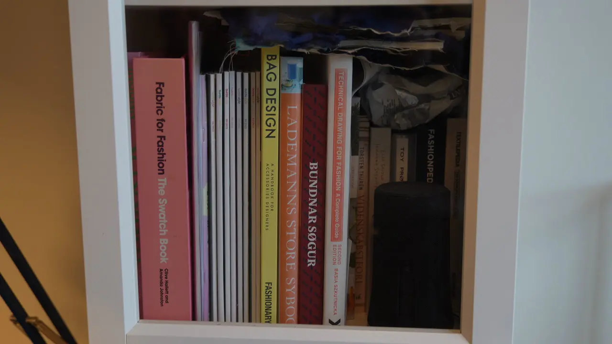
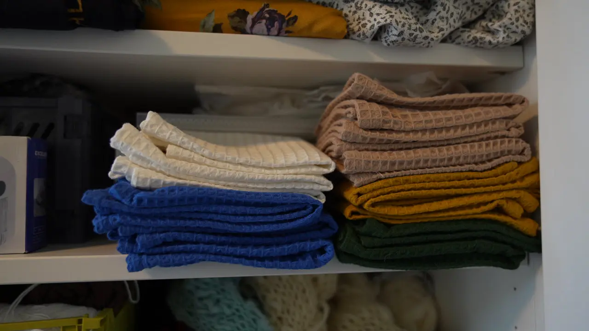
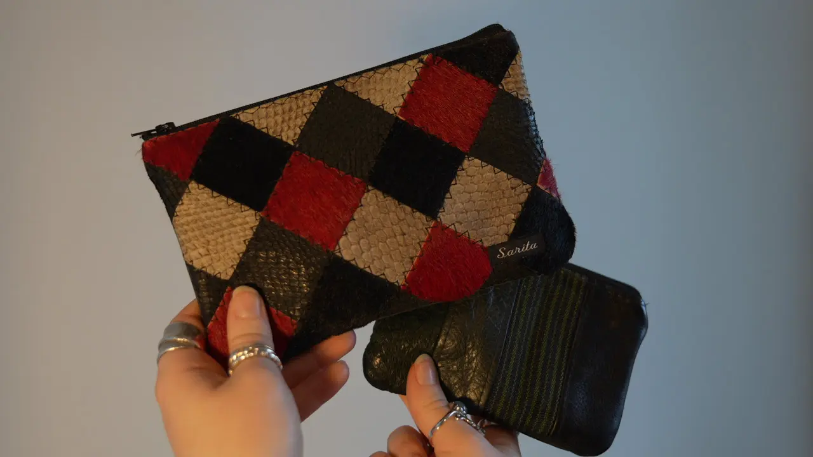

Passion for at sy
Saritas historie
Sarita Thomassen er en 26-årig pige fra Færøerne med en dyb passion for at sy. Hun elsker at forvandle stof til unikke og smukke kreationer, og hendes symaskine er hendes trofaste følgesvend. Sarita har gennem årene syet et imponerende udvalg af tøj, der spænder fra elegante blazere og klassiske skjorter til feminine toppe og kjoler. Hendes øje for detaljer og kærlighed til håndværket skinner igennem i hvert eneste stykke tøj, hun laver. For Sarita er syning ikke bare en hobby – det er en kreativ udfoldelse og en måde at bringe sine idéer til live.

Saritas kreationer



